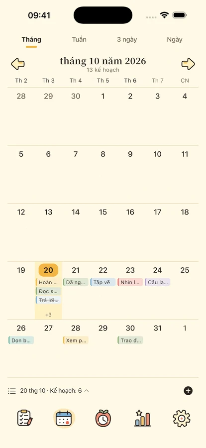
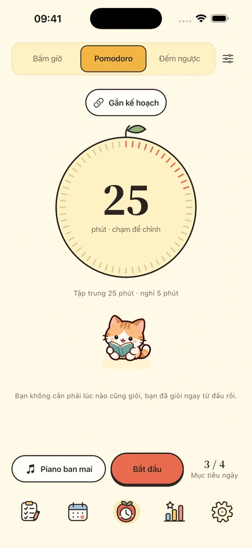
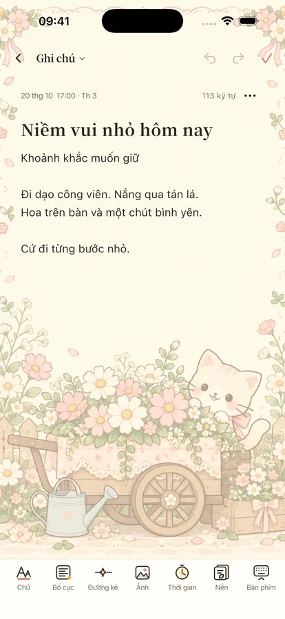

Ma trận Eisenhower và đồng hồ Pomodoro
Sắp xếp kế hoạch, tập trung vào một việc và giữ những ý tưởng cùng ngày đáng nhớ ở bên bạn.
Dành cho iPhone và iPad

Từng việc một, theo nhịp của bạn.
Bắt đầu từ một việc nhỏ
Dành chỗ cho kế hoạch, thời gian và một chút động viên.

Mỗi kế hoạch có một vị trí.
Phân biệt quan trọng và khẩn cấp với bốn góc phần tư. Xem ngày, tuần, tháng qua lịch và dòng thời gian, với lặp lại, việc con và nhắc nhở cục bộ.
Thời gian cho việc trước mắt.
Pomodoro, đếm ngược hoặc bấm giờ với 8 bản nhạc ngoại tuyến và 11 âm thanh môi trường. Bốn người bạn và đồng hồ lật cùng bạn tập trung, nghỉ ngơi. Thư viện đầy đủ cần Plus hoặc trải nghiệm ba ngày; một bản nhạc, một âm thanh môi trường và im lặng miễn phí. Plus: Kiểu đồng hồ Plus · Kiểu tiện ích Plus · Thống kê nâng cao · Mẫu kế hoạch · Sao lưu tự động · Lịch sử sao lưu.



Giữ ý tưởng và ngày đáng nhớ.
Ghi chú có định dạng, ảnh và giấy nền, xem lại theo ngày hoặc danh mục. Đếm ngày tới sinh nhật và kỷ niệm. Tiện ích kế hoạch, lịch, tập trung, ngày quan trọng và ghi chú cần iOS 17 trở lên.
Cuộc sống hằng ngày thuộc về bạn.
Dùng tính năng cục bộ không cần đăng nhập. Sao lưu đám mây là thao tác thủ công, phân tích sử dụng mặc định tắt. Bạn có thể xuất nội dung và quản lý lựa chọn riêng tư.
Quyền riêng tư